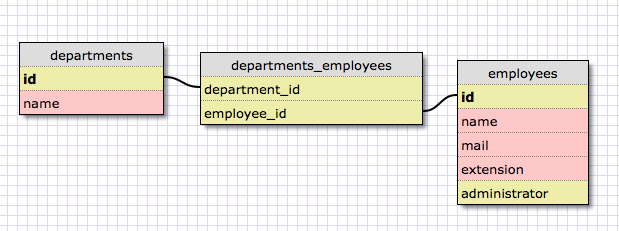

部署と社員の情報を管理するアプリケーションを作る
下記の要求を満たす Web アプリケーションを作成しよう

scipt/generate コマンドの使い方
使い方は --help オプションを使用して調べることができる
$ ./script/generate --help $ ./script/generate scaffold --help $ ./script/generate migration --help